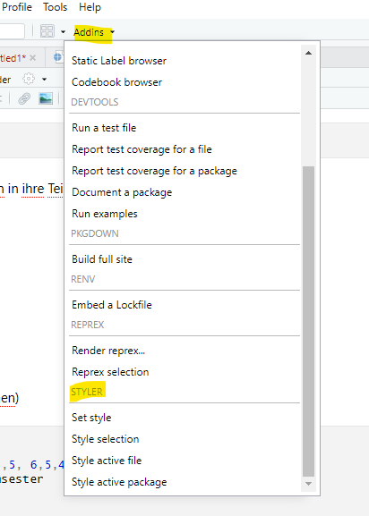

data_vp <- read_delim("/raw/data_vp.csv",
delim = ",")Hands On – Coding Basics (Einheiten 3 und 4)
Bei Bedarf findest du hier nochmals die Slides zu Einheit 3:
Und zu Einheit 4:
Lernziele dieses Hands-On-Blocks
✅Projekte
✅Unterschied zwischen relativen und absoluten Pfaden verstehen
✅Datensätze in R importieren, inspizieren und speichern
✅Datensätze mit cbind() und full_join() mergen und Vor- und Nachteile reflektieren
✅Funktionen und ihre Argumente (inkl. Defaults) nutzen
✅Style Conventions
Projekte und Pfade
Was sind R-Projekte?
Ein R-Projekt ist eine Projektdatei (.Rproj), die du in RStudio anlegst.
Wenn du ein Projekt öffnest:
- RStudio setzt automatisch das Working Directory (Arbeitsverzeichnis) auf den Ordner, in dem
.Rprojliegt.
- Alle Dateien, Skripte, Daten und Ergebnisse, die du in diesem Ordner ablegst, gehören logisch zu diesem Projekt.
- Man kann es sich vorstellen wie einen „Container“ für ein Forschungsprojekt, eine Hausarbeit oder ein Analysepaket.
- Du kannst entweder ein neues Projekt erstellen oder ein bestehendes Projekt öffnen.
👉 In RStudio siehst du oben rechts, in welchem Projekt du dich gerade befindest. In diesem Screenshot ist noch kein Projekt geöffnet.

Übung:
Im Ordner Grinschgl2020 liegt bereits eine .Rproj-Datei. Öffne sie und überprüfe oben rechts in RStudio, ob du dich im richtigen Projekt befindest. Du kannst zukünftig immer auf das Projekt klicken wenn du die Analyseskripte dazu öffnen willst.
Bei Fehlermeldungen:
„Achtung! Bei Mac-Usern kann es teilweise zu Problemen mit den Berechtigungen kommen. Falls dir beim Öffnen diese Fehlermeldung angezeigt wird:“

Die Lösung besteht darin, die Berechtigungen für den Ordner anzupassen. Dafür gehst du auf den ‚r_you_ready‘-Ordner und öffnest das Menü mit ‚Get Info‘.

Die Berechtigungen passt du an, indem du auf das Schloss unten rechts klickst, dein Passwort eingibst und bei deinem Account ‚Read & Write‘ auswählst. Anschliessend klickst du auf die drei Punkte im Kreis und führst ‚Apply to enclosed items…‘ aus. Danach solltest du die vollen Berechtigungen haben.
Projekt erstellen
Falls du in Zukunft ein Projekt erstellen willst (z.B. für deine Masterarbeit): 👉Kapitel 6.2
Absolute vs. relative Pfade
Absolute Pfade beschreiben den vollständigen Weg zu einer Datei, ausgehend vom Wurzelverzeichnis deines Computers.
🔴 Nachteil: Sie sind oft sehr lang und funktionieren nur auf deinem Rechner.
- Beispiel (Windows):
C:\Users\maxmustermann\Dokumente\r_you_ready\Grinschgl2020\data\raw\Beispieldatei.csv
- Beispiel (Windows):
Relative Pfade beschreiben den Ort einer Datei relativ zum aktuellen Arbeitsverzeichnis.
🟢 Vorteil: Sie sind kürzer und funktionieren auf jedem Rechner, solange die Projektstruktur gleich bleibt.
Beispiel:
- Projektordner = Grinschgl2020
- Datei liegt in data/raw/Beispieldatei.csv
- relativer Pfad:
data/raw/Beispieldatei.csv
❓Beantworte für dich selbst:
Um ein Skript reproduzierbar zu gestalten – was eignet sich besser: relative Pfade oder absolute Pfade? Aus welchen Gründen?
Daten importieren und exportieren
Import
Cheatsheat Datenimport mit readr
Einlesen via Oberfläche
- Stelle sicher, dass du das Metapaket tidyverse geladen hast (
library(tidyverse)) (siehe Hands-On 1).
Wir verwenden Funktionen aus den Packages readr und readxl, die Teil des Tidyverse sind.
In diesem Seminar arbeiten wir mit csv und xslx Dateien. Wie werden uns mehere Arten und Weisen anschauen wie man diese einlesen kann.
Beim Einlesen von Daten ist ein wichtiger Faktor, mich welchem Trennzeichen (Delimiter) die Werte von einander getrennt werden.
Auszug aus Cheatsheet: Die Funktionen read_delim und read_csv:

read_csv() ist eine Spezialisierung von read_delim(), die automatisch Komma als Trennzeichen verwendet, während man bei read_delim() das gewünschte Trennzeichen selbst angeben muss.
Importiere die Datei
"data_mmq.csv"über die Point & Klick-Oberfläche von RStudio. Verwende dafür “From Text (readr)”
- Tipp: Klicke auf Environment → Import Dataset → wähle die
"readr"-Funktion. - Schaue dir den Datensatz an: Mit welchem Trennzeichen sind die Daten getrennt?

- Stelle in der Oberfläche
"Delimiter"auf das passende Trennzeichen. Was verändert sich?
- Stelle in der Oberfläche
- Betrachte den Code, den die Oberfläche generiert. Versuche den Pfad im Kontext von Projekten zu verstehen.
- Wenn du im Projekt gearbeitet hast, sollte bei dir der Code etwa so aussehen:
data_mmq <- read_delim("data/raw/data_mmq.csv", delim = ";", escape_double = FALSE, trim_ws = TRUE) - Wenn du nicht im Projekt gearbeite hättest, wie würde dann der Dateipfad aussehen?
- Wenn du im Projekt gearbeitet hast, sollte bei dir der Code etwa so aussehen:
- Wenn du den Code via Klick-Oberfläche eingelesen hast, wirst du den ausgeführten Code in der Konsole sehen. Kopiere diesen in dein Skript, so dass du ihn in Zukunft wiederverwenden und anpassen kannst.
- Schaue dir die eingelesenen Daten mit
View(data_mmq)an. Wenn du alles richtig gemacht hast, ist in jeder Zelle nur ein Wert.
- Tipp: Klicke auf Environment → Import Dataset → wähle die
Einlesen via Code
.CSV Dateien
Versuche, weitere CSV-Datensätze einzulesen:
data_cb,data_cvstm,data_pct,data_vp.
Suche dafür eine geeignete Funktion zum Einlesen von.csv.- Verwende den von R-Studio generierten Code, und passe ihn an um einen weiteren Datensatz einzulesen (z.B. indem du den Filenamen veränderst).
Korrigiere diesen Code und lies damit die Datei
data_vpein (überprüfe den Pfad und den Delimiter)
.XSLX Dateien
Einige Dateien liegen im
.xlsx-Format.- Verwende dafür das Paket readxl und die Funktion
read_excel(). Tipp: Installiere und lade das Paket zunächst. - Nutze die Hilfefunktion (
?read_excel) für Infos zur Funktion oder schaue dir das Cheatsheet an - Versuche, die Datensätze
data_ratingsunddata_strategieseinzulesen.
- Verwende dafür das Paket readxl und die Funktion
Am Ende solltest du die 7 verschiedene Datensätze in deinem Environment sehen.
Vertiefung
👉Für das Einlesen anderer Arten von Datensätzen (z.B. SPSS Dateien), siehe Kapitel 3.2
Daten mergen
Wird in EH4 noch genauer erklärt - aber probiere auch gerne schon vorab!
Nun haben wir 7 verschiedene Datensätze in unserem Enviornment. Da wir jedoch mit dem kompletten Datensatz arbeiten wollen, ist es sinnvoll diese Datensätze zu einem zu verbinden. Jedoch müssen dafür mehrere Dinge beachtet werden: Sind die Daten in der gleichen Reihenfolge (z.B. geordnet nach Identifier (z.B. code in data_mmq).
Mögliche Funktionen: z. B. cbind() aus Base R oder full_join() aus dem Tidyverse.
Aufgaben
Füge alle 7 Datensätze mit cbind() zusammen und schaue dir das Ergebnis an.
- Was fällt dir auf?
- Hinweis: Die Datensätze werden einfach nebeneinander „geklebt“, ohne inhaltlich abgeglichen zu werden.
- Reflektiere: Macht das Sinn? Was sind die Gefahren, Daten auf diese Art zu mergen?
Versuche es nun mit full_join().
Full_join verbindet zwei Datensätze anhand einer Schlüsselvariable, so dass alle Zeilen aus beiden Datensätzen erhalten bleiben. Die Schlüsselvariable ist essentiell dafür dass die Datensätze richtig verbunden werden (Anordnung der Variablen), und grenzt sich dadurch von Funktionen wie cbind() ab.

Lege eine gemeinsame Variable als Schlüssel fest, hier:
by = "code".Füge nun alle 7 Datensätze zu einem zusammen, nenne diesen
dat_fullAchtung:
full_join()funktioniert immer nur mit 2 Datensätzen gleichzeitig 👉 du musst es also mehrfach anwenden, um alle 7 Datensätze zusammenzuführen.Hinweis: Im Datensatz
data_pctheißt die Code-Variable leicht anders. Verwende deshalbby = c("code_all" = "code").
Inspiziere deinen zusammengefügten Datensatz “dat_full”
- 🔍Überprüfe: Wie viele Zeilen und Spalten hat dein Datensatz? Verwende:
ncol(),nrow(),dim()- Stimmt die Anzahl der Zeilen mit der Anzahl der Versuchspersonen aus dem Paper überein?
- 👀Verschaffe dir eine Überblick über deinen Datensatz mit den Funktionen, die wir schon im letzten Hands On getestet haben:
- Lasse dir die Variablenamen ausgeben mit
names() head()glimpse()str()dat_fullsummary()
- Lasse dir die Variablenamen ausgeben mit
- Gibt es redundante oder doppelte Variablen?
Auf einzelne Werte zugreiffen:
Greife auf den ersten Wert der ersten Spalte zu: Verwende eckige Klammern. Der erste Wert in der Klammer steht für die Zeile, der zweite für die Spalte.
Greife auf die Werte der Spalten 1–15 in der ersten Zeile zu. Verwende wieder eckige Klammern und den Bereichsoperator
1:15.Lasse dir alle Werte der Variable
"mean_rl_all"ausgeben. Auf Variablen greifst du mit$zu.Greife auf die ersten 10 Werte der Variable
"question1"zu. Verwende dazu den$-Operator in Kombination mit dem Bereichsoperator1:10.
Daten speichern
Speichere dat_full in deinem Ordner "data" als CSV-Datei ab
Verwende dafür die Funktion write.csv(). Du musst zwei Argumente angeben: Welcher Datensatz aus deinem Environment gespeichert werden soll und unter welchem Pfad (inklusive Dateiname) er abgelegt wird. Bei Unklarheiten schaue dir das Cheatsheet oder die Hilfefunktion an. Überprüfe nach dem speichern, ob dein Datensatz im richtigen Ordner zu finden ist.
👉 Für diesen Datensatz sollt ihr anschließend das Codebook erstellen.
Coding Basics: Funktionen
👉Kapitel 2.4: Calling Functions
👉Kapitel 2.3: Funktionen aufrufen
Wir haben in diesen Übungen bereits einige Funktionen verwendet (z. B. sum() oder sort()). Funktionen bestehen aus einem Namen und Argumenten. In diesem Beispiel wird die Funktion sort() aufgerufen. Die Argumente, die dafür benötigt werden, sind first_vector und decreasing = TRUE. Die meisten Funktionen haben Defaults, also Argumente mit einer Voreinstellung. Wenn man diese nicht verändern möchte, müssen sie nicht explizit angegeben werden. sort() hat als Default decreasing = FALSE. Deswegen müssen wir, um die höchsten Werte des Vektors zu bestimmen, diesen Default umstellen. Argumente ohne Defaults müssen zwingend angegben werden).
Die Defaults von Funktionen lassen sich über die Hilfefunktion nachschauen. Diese kann entweder im Tab Help geöffnet werden oder direkt über die Konsole mit ?Funktionsname.
first_vector <- c(22342, 4, 5, 6, 7, 23234, 342, 342)
highest_values_1 <- sort(first_vector)[1:2]
highest_values <- sort(first_vector, decreasing = TRUE)[1:2]Bei vielen Funktionen werden die Namen der Argumente weggelassen.
Welche Argumente werden hier übergeben? Schreibe die Funktion mit den vollständigen Argumentnamen aus:
seq(-4, 11, 3)[1] -4 -1 2 5 8 11Wenn die Argumente nicht explizit benannt werden, ist die Reihenfolge entscheidend. Wenn du die Argumente explizit angibst, kannst du die Reihenfolge frei wählen.
- Korrigiere diesen Code: Ergänze die Argumentnamen, sodass eine Sequenz von 3 bis 12 in 2er-Schritten erstellt wird. Belasse dabei die Reihenfolge der Zahlen.
seq(2, 12, 3)ℹ️Manche Funktionen sind in mehreren Paketen beinhaltet, sowie wie z.B. die Funktion filter(). Um die Funktion definitiv aus einem bestimmten Paket zu verwenden, muss man das Paket dazu schreiben: dyplr::filter()
Tab Completion:
Eine nützliche Funktion von RStudio ist die Tab Completion. Wenn du eine Funktion aufrufst und die Tabulator-Taste drückst, erscheint ein Menü mit den möglichen Argumenten, die du angeben kannst. Probiere es mit der Funktion mean(). Das funktioniert auch für Funktionen aus Paketen, wenn du diese mit :: auswählst, zum Beispiel: readr::.
Weitere Tasten und Tastenkürzel:
In RStudio benötigen wir häufig Zeichen, die wir im Alltag kaum verwenden. Da wir nicht alle mit dem gleichen Betriebssystem (Mac/Windows) und auch nicht mit identischen Tastaturen arbeiten, können wir keine einheitlichen Angaben machen, wo sich diese Zeichen genau befinden. Versuche daher, die folgenden Zeichen auf deiner eigenen Tastatur zu finden:
[ ]Square brackets (eckige Klammern){ }Curly brackets (geschweifte Klammern)$Dollar sign (Dollarzeichen – wird für das Auswählen von Variablen benötigt)#Hash (Rautezeichen – für Kommentare in R-Skripten)~Tilde (für Modellnotationen in R; brauchen wir v.a. am Ende des Semesters bei den Analysen)|Vertical bar (senkrechter Strich – als logischer Operator)`Backtick (Gravis – vor allem für Code Chunks, selten manuell einzugeben)
Verschachtelte Funktionen:
ℹ️Es ist zwar möglich, mehrere Funktionen ineinander zu verschachteln. Dies kann jedoch schnell zu Verwirrung führen und den Code unnötig unübersichtlich machen. Verschachtelte Funktionen werden von innen nach aussen ausgeführt.
❓Stelle dir hier die Frage: Was wird genau gerundet? Die einzelnen Elemente des Vektors oder der errechnet Durchschnitt?
print(mean(round(first_vector)))[1] 5785.25❗Aufgabe: Zerlege die Verschatelte Funktion in ihre Teilschritte.
Style Conventions
Korrigiere diesen Code so dass er
Fehlerfrei läuft
Leserlicher ist: Beachte dafür
Naming Conventions
Weitere Style Vorgaben (z.B. Leerzeichen)
Französischschul_NotenSemesester -<(4,5, 6,5,4, 3)
mean <-mean(Französichschul_NotenSemsester
print ( mittelwert)Installiere das Package
stylermitinstall.packages()und lade es.stylerhat eine sogenannte “Wrapper-Funktion”, die du unter “Addins” aufrufen kannst (evtl. musst du R vor dem Laden neu starten). Verwende den Default-Style (tidyverse).
Versuche mit der
Styler-Funktion diesen Code zu leserlicher zu machen (markiere den Code und wähle Style selection). (Du musst diesen ggplot Code nicht verstehen - wir kommen dazu in einer späteren Einheit noch.)
library(ggplot2)
library(palmerpenguins)
ggplot(penguins,aes(x=flipper_length_mm,y=body_mass_g,color=species))+geom_point()+labs(x="flipper",Y="MASS")+theme_minimal()